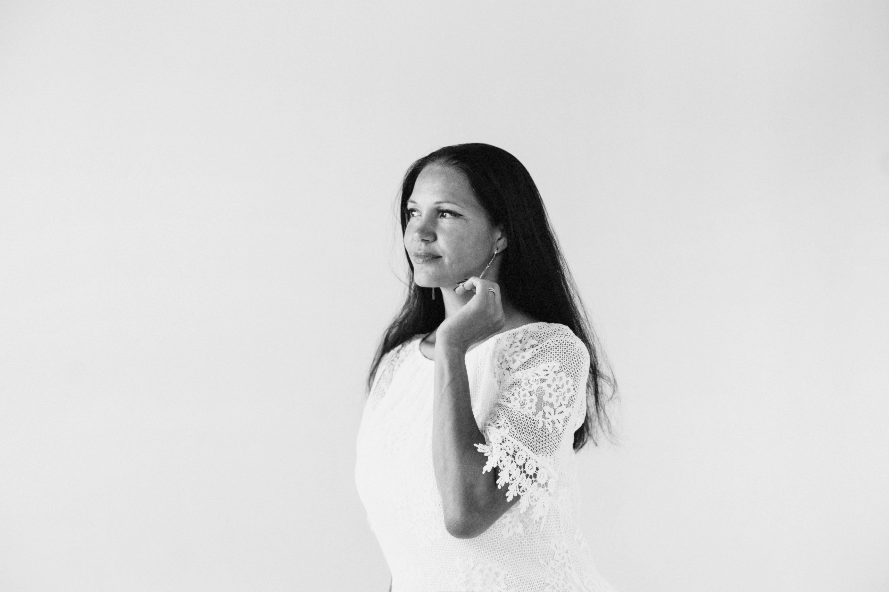

Савчук Анастасия
Педагог-психолог • Специалист по детскому развитию и нейропсихологическому подходу

Здравствуйте! Рада приветствовать вас.
Я верю, что каждый ребёнок приходит в этот мир с огромным потенциалом, а возникающие трудности в обучении или behavior — это лишь сигналы о том, что какому-то элементу внутренней «мозаики» нужна поддержка.
Мой путь в детскую психологию начался с глубокого интереса к тому, как формируется мозг ребёнка, как эмоции влияют на способность учиться и почему одинаковые методики по-разному работают для разных детей.
В своей практике я совмещаю мягкие методы арт-терапии и сказкотерапии с доказательными нейропсихологическими упражнениями. Это позволяет бережно развивать память, внимание, мелкую моторику и самоконтроль без стресса для ребёнка.
Принципы моей работы
Бережность и безопасность
Никакого давления и строгости. Ребёнок раскрывается и учится только тогда, когда чувствует себя в полной безопасности.
Индивидуальный ритм
Каждая программа подстраивается под особенности и темп развития конкретного ребёнка, а не под абстрактный стандарт.
Союз с родителями
Родители — главные эксперты по своему ребёнку. Я работаю в тесном контакте с вами, давая понятные рекомендации для дома.
Образование и дипломы
Психолог. Преподаватель психологии
Закончила Московская Открытая Социальная Академия в 2012 году.
Прикладной анализ поведения (АВА-терапия): коррекция поведенческих расстройств и развитие адаптивных форм поведения
Профессиональная переподготовка в АНО ДПО "НАДПО" в 2025 году (560 часов). Предоставляет право на ведение профессиональной деятельности в сфере дефектологии, вид деятельности: коррекция поведенческих расстройств и развитие адаптивных форм поведения
Основы семьесберегающего подхода
Специализация: стратегии поддержки семьи ребёнка с ОВЗ для повышения эффективности коррекционных занятий. 2025 год
Организация работы подросткового пространства
Специализация: стратегии поддержки семьи ребёнка с ОВЗ для повышения эффективности коррекционных занятий. 2026 год
Готовы сделать первый шаг к гармоничному развитию?
Запишитесь на первичную консультацию, где мы обсудим ваши вопросы и подберём комфортный формат работы.
Записаться на встречу